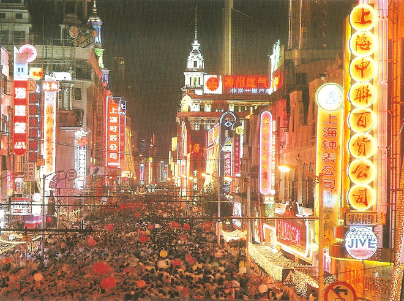
.
'Paris of the East', 'Queen of the Orient' or 'Whore of China': China's most western-acting city is a hybrid of Paris and New York in the 1930s. But first we had to get there. We travelled by train from Nanjing and arrived into Shanghai station where we were swamped by a million other travellers.
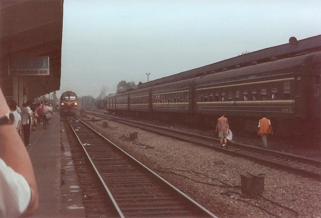
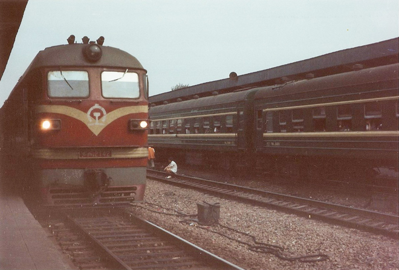
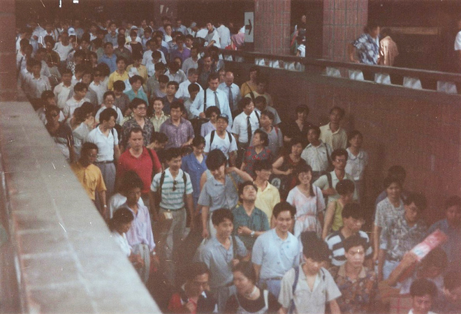
First stop, the Shanghai Exhibition Centre, a mammoth example of Soviet palace architecture but with all the trappings of capitalism.
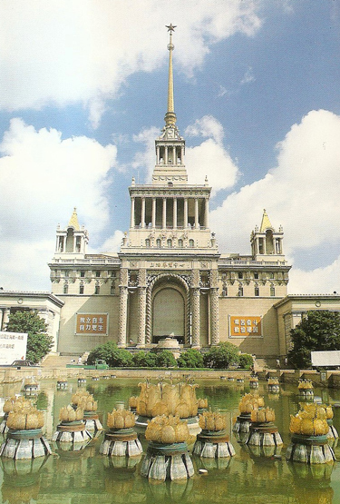
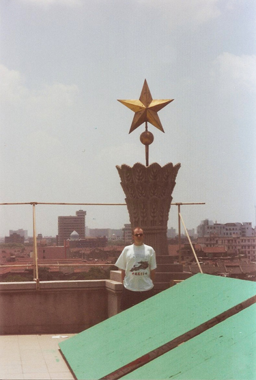
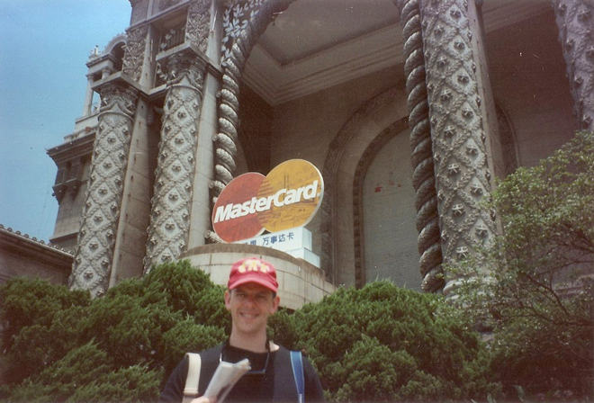
Then a visit to the Jade Buddha Temple. Built between 1911 and 1918, it contains a two-metre high white jade buddha (although some say it is alabaster) which was brought to Shanghai from Burma in 1882. The Jade Buddha Temple is very popular with Overseas Chinese although no photography is permitted inside the Temple and certainly not of the Buddha itself - even for ready money - hence the postcard image below.
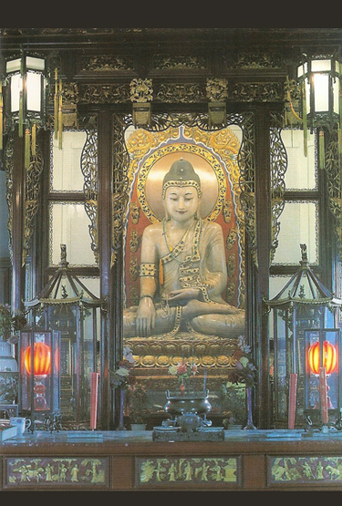
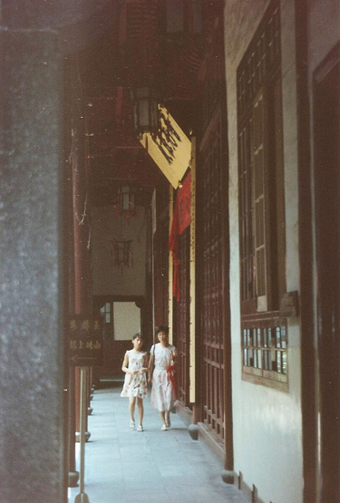
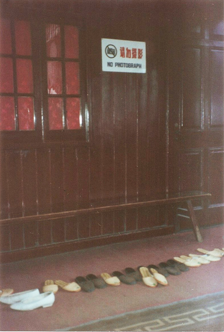
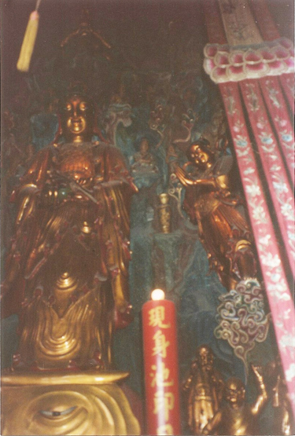
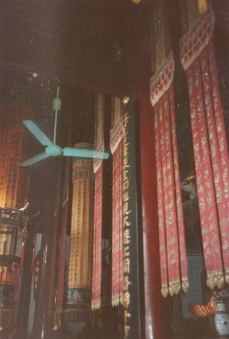
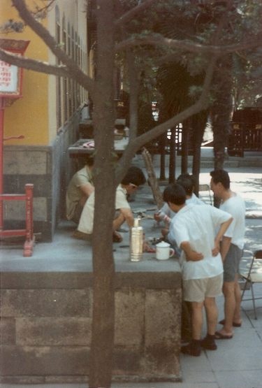
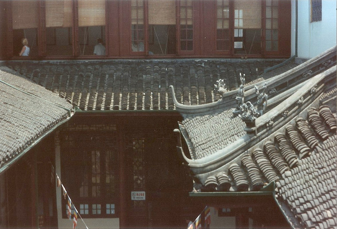
At the north-eastern end of the old Chinese city is Mandarin Gardens (Yùyuán). Many visitors consider this to be one of the most interesting places in Shanghai (it gets some 200,000 visitors daily). While there is nothing of historical interest left in it, it is one of those places where you can gawk, mix, buy, sell and eat.
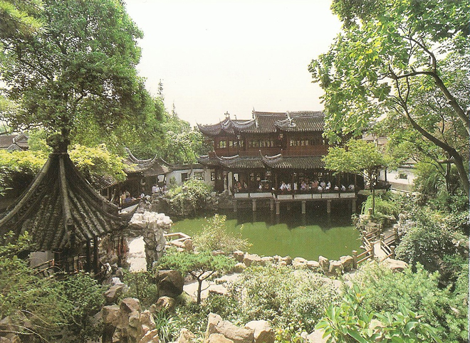
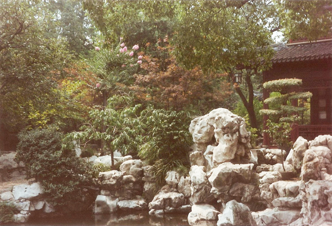
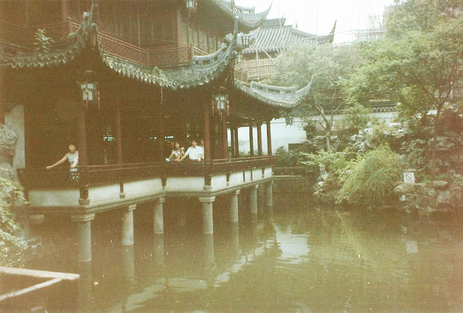
The Bund is an Anglo-Indian term for the embankment of a muddy waterfront. An apt description as, between 1920 and 1965, the city of Shanghai sank several metres. The Bund has a succession of neo-classical 1930s style buildings with a bit of monumental Egypt thrown in for good measure. One of the most famous buildings is the Peace (Cathay) Hotel, allegedly where Noel Coward wrote his play Private Lives.
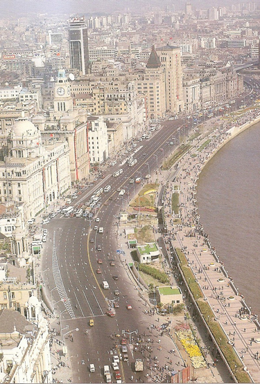
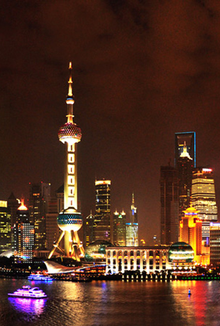
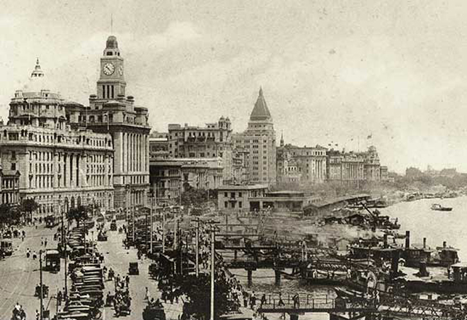
The Peace Hotel was built by Sir Victor Sassoon. Originally called 'Sassoon House', it was one of the first high-rise buildings in the Eastern Hemisphere. Designed by architects Palmer and Turner, with a reinforced concrete structure, it was built between 1926 and 1929.
During the Cultural Revolution, the hotel was used by the Gang of Four, most famously by Zhang Chunqiao as he headed the Shanghai Commune from headquarters in the Peace Hotel.
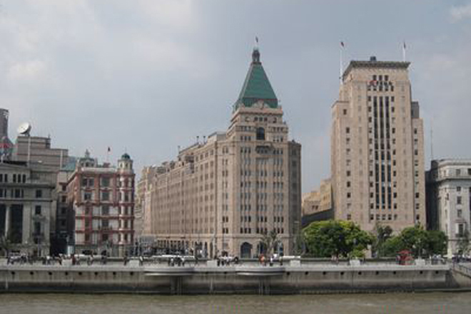
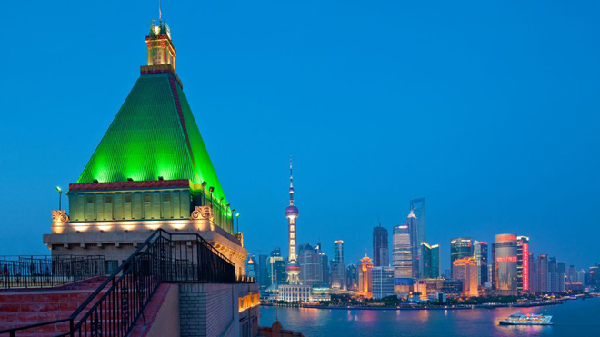
Shanghai is still a forward looking city, with a population of at least 12 million people. It features modern architecture and is still a popular home for many foreign companies and financiers. It has recently opened a new Metro system.
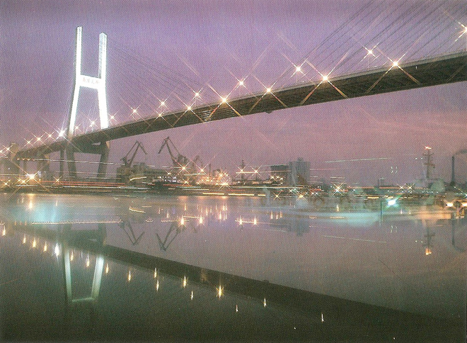
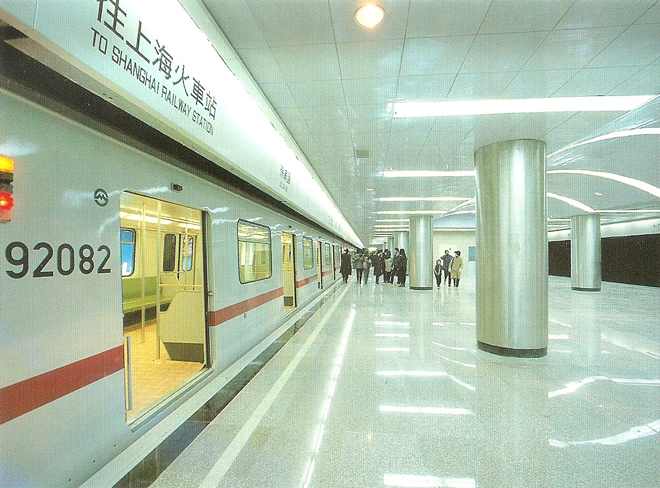